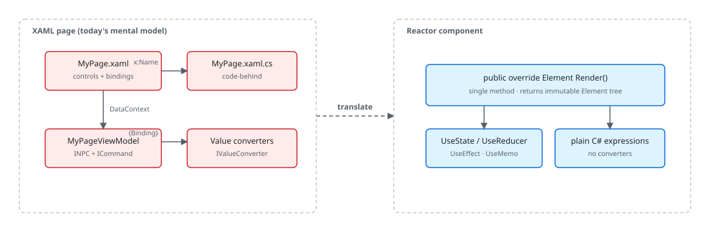

Microsoft.UI.Reactor (Reactor)'s render-from-state model has a clean 1:1 translation table to XAML
that an experienced XAML developer can hold in their head. Where XAML
describes bindings between view-model properties and control DPs and lets
the binding engine pull values on change-notification, Reactor describes the
current UI directly and re-evaluates the entire component when state
changes. The control tree is the same WinUI control tree at runtime — only
the authoring surface differs. This page is the translation key: every
XAML idiom you reach for (DataContext, Binding modes, DataTemplate,
DependencyProperty, code-behind, ICommand, Frame.Navigate) maps to a
specific Reactor shape, and the body below walks each one in order.
Companion essay reactor-vs-xaml covers the
architectural why — read this page for the recipes, that one for the
philosophy.
Reactor for XAML Developers¶
If you already know XAML, Reactor is not a different Windows UI stack. It still renders real WinUI controls. The shift is in how you describe the UI: instead of splitting a page across XAML, bindings, converters, and code-behind, you return the UI directly from C# and let Reactor keep the native control tree in sync.

The Mental Model Shift¶
Think of Reactor as "WinUI controls, but expressed like a function of state."
| In XAML | In Reactor |
|---|---|
Page, UserControl, Window markup |
A Component with Render() |
{Binding Name} |
Plain C# variable usage: TextBlock(name) |
Mode=TwoWay |
Controlled input: TextBox(name, setName) |
DataContext |
Local hook state, typed props, or context |
ICommand |
Lambdas, methods, or commands |
StackPanel |
VStack or HStack |
Grid.Row, Grid.Column |
.Grid(row: ..., column: ...) |
StaticResource / ThemeResource |
Theme tokens and fluent modifiers |
Frame.Navigate(...) |
UseNavigation + NavigationHost |
The important difference is that Reactor does not ask you to describe bindings.
It asks you to describe the current UI. When the state changes, Render()
runs again and Reactor updates only the native WinUI controls that changed.
Rewriting a Familiar Form¶
Here is the kind of XAML page many WinUI developers start with:
<StackPanel Spacing="12" Padding="24">
<TextBlock Text="Customer" FontSize="24" FontWeight="SemiBold" />
<TextBox Header="Name"
Text="{Binding Name, Mode=TwoWay}" />
<TextBox Header="Email"
Text="{Binding Email, Mode=TwoWay}" />
<CheckBox Content="Email me updates"
IsChecked="{Binding WantsUpdates, Mode=TwoWay}" />
<Button Content="Save"
Command="{Binding SaveCommand}" />
</StackPanel>
In Reactor, the same screen becomes a component:
class TutorialFormPage : Component
{
public override Element Render()
{
var (name, setName) = UseState("");
var (email, setEmail) = UseState("");
var (wantsUpdates, setWantsUpdates) = UseState(true);
var canSave = !string.IsNullOrWhiteSpace(name) && !string.IsNullOrWhiteSpace(email);
return VStack(12,
SubHeading("Customer"),
TextBox(name, setName, header: "Name"),
TextBox(email, setEmail, header: "Email"),
CheckBox(wantsUpdates, setWantsUpdates, label: "Email me updates"),
HStack(8,
Button("Save", () => { }).IsEnabled(canSave),
TextBlock(canSave ? "Ready to save" : "Complete all required fields")
.Opacity(0.7)
)
).Width(360);
}
}
What changed:
- Bindings became state variables.
Name,Email, andWantsUpdateslive inUseState. - Two-way input became explicit.
TextBox(name, setName)makes data flow obvious. - The command became normal C#. The save button uses a lambda instead of XAML command wiring.
- Derived UI stayed inline.
canSaveis just a local expression, not a converter or extra property.
That is the Reactor pattern in one screen: state at the top, UI returned at the bottom.
Layout Feels Familiar, but Smaller¶
Most XAML layouts translate directly, but Reactor pushes you toward a smaller set of composition primitives.
| XAML | Reactor |
|---|---|
StackPanel Orientation="Vertical" |
VStack(...) |
StackPanel Orientation="Horizontal" |
HStack(...) |
Grid with row/column definitions |
Grid(columns: ..., rows: ..., ...) |
Border |
Border(child) |
ScrollViewer (classic) |
ScrollViewer(child) |
ScrollView (modern) |
ScrollView(child) |
This XAML:
<Grid ColumnSpacing="12" RowSpacing="8">
<Grid.ColumnDefinitions>
<ColumnDefinition Width="Auto" />
<ColumnDefinition Width="*" />
</Grid.ColumnDefinitions>
<Grid.RowDefinitions>
<RowDefinition Height="Auto" />
<RowDefinition Height="Auto" />
</Grid.RowDefinitions>
<TextBlock Grid.Row="0" Grid.Column="0" Text="First name" />
<TextBox Grid.Row="0" Grid.Column="1" />
<TextBlock Grid.Row="1" Grid.Column="0" Text="Last name" />
<TextBox Grid.Row="1" Grid.Column="1" />
</Grid>
becomes:
class GridTranslationPage : Component
{
public override Element Render()
{
return Grid(
columns: [GridSize.Auto, GridSize.Star()],
rows: [GridSize.Auto, GridSize.Auto],
TextBlock("First name").Bold().Grid(row: 0, column: 0),
TextBox("", _ => { }).AutomationName("First name").Grid(row: 0, column: 1),
TextBlock("Last name").Bold().Grid(row: 1, column: 0),
TextBox("", _ => { }).AutomationName("Last name").Grid(row: 1, column: 1)
) with
{
ColumnSpacing = 12,
RowSpacing = 8
};
}
}
The layout idea is the same. The difference is that the child placement lives in fluent modifiers instead of attached properties written in markup.
Bindings Turn into State, Props, or Plain Expressions¶
XAML developers often look for the Reactor equivalent of Binding. There is no
single replacement, because bindings usually solve several different problems.
Use this rule of thumb instead:
- Value owned by this component:
UseState - Complex local updates:
UseReducer - Input from a parent: typed props via
Component<TProps> - Computed value: ordinary local C# expression
- Shared app state:
contextor a higher-level parent component - Existing MVVM object:
UseObservableorUseObservableTree
That is why Reactor code often looks simpler than XAML. A label like
TextBlock($"{firstName} {lastName}") is already "bound" because Render()
re-runs whenever the relevant state changes.
Caveat: A XAML
BindingwithMode=TwoWaybecomes a Reactor controlled-input pattern (TextBox(name, setName)), not a binding-with-mode. There is no Reactor analogue toMode=OneWay/Mode=OneTime/Mode=TwoWaybecause state IS the binding — every render re-reads from state, every edit calls a setter. If you writeTextBox(name, _ => { })and never call a setter, the field is read-only (effectivelyMode=OneWay); if you wire both, it round-trips (effectivelyMode=TwoWay). The trap is "reach for the binding mode for OneTime" — there is no equivalent. Cache the value in aUseRefand readref.Currentif you genuinely want to capture-and-freeze, or call a function once in aUseEffect(() => …, Array.Empty<object>())so it runs only on mount. The Reactor analyzer doesn't emit a specific diagnostic for "missing setter" — passingnullto aTextBoxchange handler is aCS8625"Cannot convert null literal" instead.
Events and Commands Are Just C¶
You do not need a special command layer for every button click.
Button("Save", Save)is the direct equivalent of a button command.Button("Refresh", async () => await ReloadAsync())works for async actions.TextBox(text, setText)replaces bothTextChangedwiring and two-way binding.
If you want richer busy/error behavior, Reactor also has a dedicated Commanding API. But the default is deliberately small: use a method or lambda first, then add command abstractions when they actually help.
Events: XAML Attributes Become Fluents¶
Every WinUI event attribute has a matching Reactor fluent. For most events
the rule is straightforward — drop the leading On from the Reactor
property name. A handful of Reactor fluents normalize across WinUI's
slightly different event shapes (e.g. CheckBox exposes three separate
Checked / Unchecked / Indeterminate events in XAML; Reactor surfaces
a single IsCheckedChanged callback):
| WinUI XAML event | Reactor fluent |
|---|---|
<Button Click="OnClick"/> |
Button("…").Click(handler) |
<TextBox TextChanged="OnTextChanged"/> |
TextBox(text, setText).Changed(handler) |
<ListView SelectionChanged="OnSelectionChanged"/> |
ListView<T>(...).SelectionChanged(handler) |
<ComboBox SelectionChanged="OnSelectionChanged"/> |
ComboBox(...).SelectedIndexChanged(handler) — Reactor reports the selected index, not the args |
<CheckBox Checked="…" Unchecked="…"/> |
CheckBox(value, setValue).IsCheckedChanged(handler) — Reactor collapses the three XAML events into a single bool callback |
The underlying init property keeps the On prefix, so existing
property-init code continues to compile:
class EventsFluentExample : Component
{
public override Element Render()
{
Action handler = () => { /* clicked */ };
return VStack(8,
// Property-init still works:
new ButtonElement("Save") { OnClick = handler },
// Preferred fluent:
Button("Save").Click(handler)
);
}
}
The fluent drops the On because C# binds el.OnClick(arg) to
delegate-as-property invocation (Action?.Invoke(arg)) and never falls back
to extension methods — see
spec 039 §0.1 for the discovery
and the naming decision. Passing null to any of these fluents clears a
previously-set handler.
Navigation Without Frame¶
Reactor navigation is still WinUI navigation in spirit, but it is declared in the
component tree instead of being driven by imperative Frame.Navigate(...) calls.
class TutorialNavigationPage : Component
{
public override Element Render()
{
var nav = UseNavigation(TutorialRoute.Home);
return Border(
NavigationView(
[
NavItem("Home", icon: "Home", tag: "Home"),
NavItem("Settings", icon: "Setting", tag: "Settings"),
NavItem("Account", icon: "Contact", tag: "Account")
],
content: NavigationHost(nav, route => route switch
{
TutorialRoute.Home => VStack(8,
Heading("Home"),
TextBlock("This is the shell root."),
Button("Go to Settings", () => nav.Navigate(TutorialRoute.Settings))
).Padding(24),
TutorialRoute.Settings => VStack(8,
Heading("Settings"),
TextBlock("Typed routes replace imperative Frame calls."),
Button("Back", () => nav.GoBack())
).Padding(24),
TutorialRoute.Account => VStack(8,
Heading("Account"),
TextBlock("A second page in the same shell.")
).Padding(24),
_ => TextBlock("Not found").Padding(24)
})
)
).Height(320).Background(Theme.CardBackground).CornerRadius(8);
}
}
Instead of keeping a Frame reference and pushing pages into it, you keep a typed
navigation handle in component state and render the current page through
NavigationHost. That keeps navigation decisions in the same declarative flow as
the rest of the UI.
You Can Keep MVVM While Migrating¶
You do not have to throw away existing INotifyPropertyChanged view models on
day one. Reactor has a bridge specifically for migration:
class ObservableTreeDemo : Component
{
private static readonly SettingsViewModel _vm = new();
public override Element Render()
{
var vm = UseObservableTree(_vm);
return VStack(12,
SubHeading("UseObservableTree"),
TextBox(vm.UserName, v => vm.UserName = v,
header: "User Name"),
ToggleSwitch(vm.DarkMode, v => vm.DarkMode = v,
header: "Dark Mode"),
Slider(vm.FontSize, 10, 32, v => vm.FontSize = (int)v)
.AutomationName("Font size"),
TextBlock($"Preview: {vm.UserName}")
.FontSize(vm.FontSize).Bold()
).Padding(24);
}
}
UseObservableTree subscribes to your existing view model and triggers a
re-render when it changes. That lets you migrate screen-by-screen:
- Keep the current view model.
- Replace the XAML view with a Reactor component.
- Move simple screens from view-model state to hooks later, if you want.
This is usually the least risky way to adopt Reactor in an existing codebase.
What You Usually Stop Writing¶
Most XAML developers notice the same things disappear first:
- No
DataContextplumbing for ordinary screens - No value converters for simple formatting or visibility rules
- No code-behind just to mirror control state
- No separate markup file for routine UI composition
- Fewer tiny view models whose only job was exposing bindable properties
The replacement is not "more framework." It is usually just more ordinary C#.
A Practical Migration Path¶
If you are moving an existing WinUI app to Reactor, this tends to work well:
- Start with one leaf page, not the whole app shell.
- Rebuild the layout with
VStack,HStack,Grid, andBorder. - Replace bindings with
UseState, props, orUseObservableTree. - Inline trivial converters as local expressions.
- Keep existing services and view models until the Reactor version is stable.
- Extract reusable UI into small components once the page works.
The goal is not to "port XAML syntax into C#." The goal is to adopt Reactor's state-driven model while preserving your WinUI knowledge.
Patterns¶
DependencyProperty becomes a hook¶
In XAML, every reactive value on a control sits on a DependencyProperty
— a globally-registered slot with metadata, change callbacks, and
inheritance rules. In Reactor, the analogue is a hook call inside
Render(): var (count, setCount) = UseState(0) is
the equivalent of a single instance-scoped DP, and the hook slot table
behind it (hooks-internals) plays the role the
DP system plays for XAML. The mental shift is "I don't need a registry;
I need a positional slot," and the implementation gets vastly smaller
in the process.
UserControl becomes a component¶
XAML developers reach for UserControl whenever a screen contains a
reusable visual chunk with its own state. In Reactor, that chunk is a
component — a class with a Render() method and
typed props. The XAML version has a .xaml markup file plus a
.xaml.cs code-behind plus often a property dependency-injected via
DataContext; the Reactor version is one C# class. The reuse story is
the same; the line count drops by ~70% on most controls.
DataTemplate becomes a render function¶
XAML DataTemplate declares how each item in a list renders. Reactor's
equivalent is the third argument to ListView<T> /
GridView<T> / VirtualList: a
Func<T, Element> that returns the per-item Element tree. Item
selection and editing are state in the parent component, not a
hand-wired SelectedItem binding. The
recipes/master-detail walkthrough is the
canonical example.
Common Mistakes¶
Trying to compute layout from a DependencyProperty¶
Reactor has no DP system — there is no DependencyProperty.Register,
no metadata callback, no AffectsMeasure. Computed values live as
ordinary local variables inside Render(); cached computations live in
UseMemo. If you find yourself looking for "the equivalent
of AffectsArrange," the answer is "your Render() already ran and
the reconciler diffed the layout-affecting modifiers" — see
reactor-vs-xaml for the longer explanation.
Using INotifyPropertyChanged to back local state¶
A small "binding view model" that exposes Name, Email, etc. as
INPC properties is the XAML idiom — in Reactor, those four lines
collapse to four UseState calls. The INotifyPropertyChanged bridge
still exists (UseObservable), but reach for it only
when you're migrating an existing view model. New code uses hooks.
Writing XAML at all¶
Reactor does not host a XAML loader. There is no Application.LoadComponent
equivalent, no xmlns:reactor, no *.reactor.xml markup. Apps that
need part of the screen in XAML use a WinUI Page as the host and
embed Reactor via winforms-interop or
ReactorHostControl; everything inside that host is C#. If a
contractor's "Reactor XAML compiler" appears in your search results,
it doesn't exist — the framework's design eliminates the second
authoring language deliberately.
Tips¶
Think "render the current truth." In XAML, you often describe relationships between properties. In Reactor, you usually compute the current value directly and return it.
Prefer state over control references. If changing something should update the
screen, store the value in UseState instead of reaching into a control instance.
Use small components where you used UserControl. The same decomposition
instinct still applies; the only change is that the reusable unit is a C#
component rather than a XAML file.
Keep MVVM only where it earns its keep. Existing observable objects migrate well, but many small "binding-only" view models become unnecessary once your UI is already C#.
Next Steps¶
- Reactor vs XAML — the architectural essay: why the binding model is fundamentally different, not just syntactically
- Getting Started — build your first Reactor app from scratch
- Components — break UI into reusable typed components
- Hooks — learn
UseState,UseReducer,UseEffect, and the core render model - Layout — map more WinUI layout patterns into Reactor primitives
- Advanced Patterns — bridge existing MVVM state with
UseObservableTree